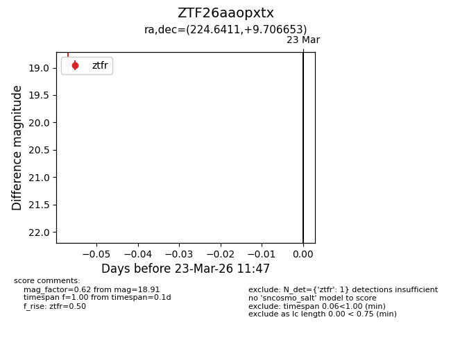
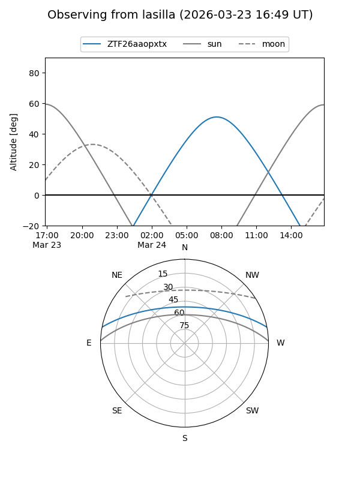
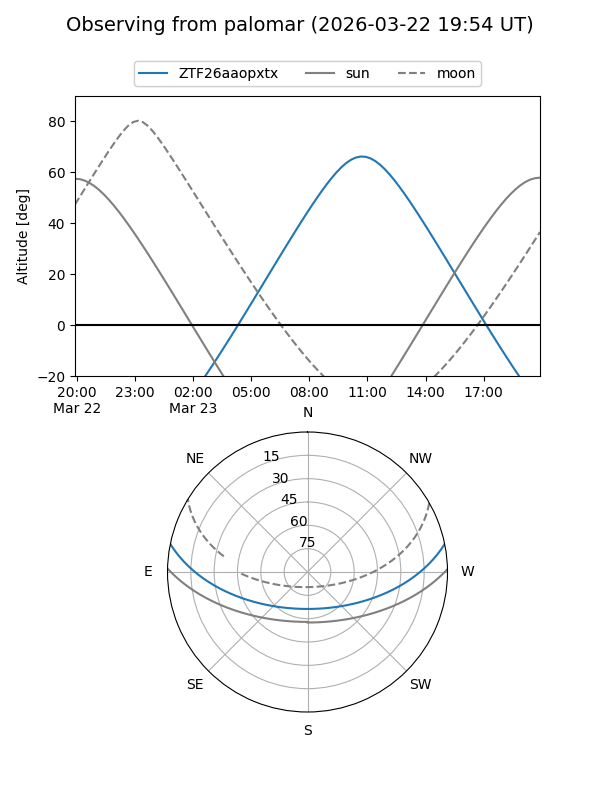

ZTF26aaopxtx
Target ZTF26aaopxtx at 2026-03-23 11:49
Aliases and brokers:
FINK: link
Lasair: link
ALeRCE: link
alt names
ZTF26aaopxtx (ztf,fink_ztf)
Coordinates:
equatorial (ra, dec) = 224.6411,+9.70665
equatorial (HMS+DMS) = 14:58:33.87,+09:42:23.95
galactic (l, b) = (8.8516,+55.34537)
Flags:
Photometry:
last ztfr=18.91
1 ztfr detections
Lightcurve

Visibility


Additional plots